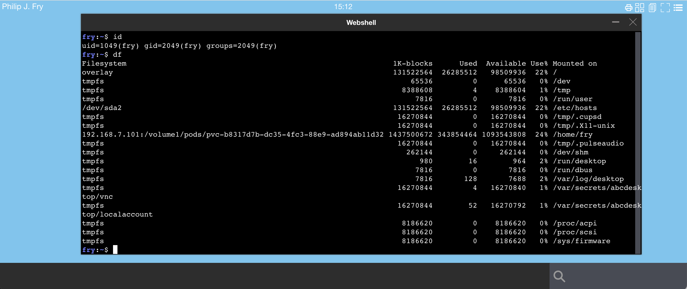

Define volumes to retain user's home directory files
To retain user's home directory files, you can define
- PersistentVolume using
hostPath. ThehostPathcan also be a mount point. - PersistentVolumeClaim using
storageClassNameparameter. Two examples are described one usingnfs, the second one usings3.
Define persistentVolume using hostPath
In your od.config file, define the new entries desktop.homedirectorytype desktop.persistentvolumespec desktop.persistentvolumeclaimspec
desktop.homedirectorytype: 'persistentVolumeClaim'desktop.persistentvolumespec: create a new volume for the user's homeDir, for persistentVolume hostPath.desktop.persistentvolumeclaimspec: create a new volume claim for the user's homeDir
# set to persistentVolumeClaim
desktop.homedirectorytype: 'persistentVolumeClaim'
# define how to create persistentvolume
desktop.persistentvolumespec: {
'storageClassName': '',
'capacity': { 'storage': '1Gi' },
'accessModes': [ 'ReadWriteOnce' ],
'hostPath': { 'path': '/mnt/abcdesktop_volumes/{{ provider }}/{{ userid }}' } }
# define how to create persistentvolumeclaim
desktop.persistentvolumeclaimspec: {
'storageClassName': '',
'resources': {
'requests': {
'storage': '1Gi'
}
},
'accessModes': [ 'ReadWriteOnce' ] }
desktop.persistentvolumespec support template values. For example '/mnt/abcdesktop_volumes/{{ provider }}/{{ userid }}'.
{{ provider }}is the provider's name templated value.{{ userid }}is the user's id templated value.
The list of all template values can be read at the end of this chapter
The user's home directory inside the pod is located on host to /mnt/abcdesktop_volumes/{{ provider }}/{{ userid }}. The directory is created automatically by kubernetes.
The /mnt/abcdesktop_volumes/ content lists the provider name.
On the host, the new directory is created, where each home directory is located.
Read the new path for 'hostPath' persistent volumes
ls -la /mnt/abcdesktop_volumes/
total 20
drwxr-xr-x 5 root root 4096 mai 12 12:40 .
drwxr-xr-x 106 root root 4096 mai 11 11:34 ..
drwxr-xr-x 3 root root 4096 mai 12 12:40 anonymous
drwxr-xr-x 3 root root 4096 mai 12 12:39 github
drwxr-xr-x 5 root root 4096 mai 12 12:40 google
For provider google, all users are listed.
ls -la /mnt/abcdesktop_volumes/google/
total 20
drwxr-xr-x 5 root root 4096 mai 12 12:40 .
drwxr-xr-x 5 root root 4096 mai 12 12:40 ..
drwxr-x--- 16 2048 2048 4096 mai 12 12:39 103464335761332102620
drwxr-x--- 16 2048 2048 4096 mai 12 12:40 112026272437223559761
drwxr-x--- 16 2048 2048 4096 mai 12 12:39 114102844260599245242
For provider google, list the user home directory for the user 103464335761332102620
ls -la /mnt/abcdesktop_volumes/google/103464335761332102620/
total 76
drwxr-x--- 16 2048 2048 4096 mai 12 12:39 .
drwxr-xr-x 5 root root 4096 mai 12 12:40 ..
-rw------- 1 2048 2048 71 mai 12 12:39 .Xauthority
-rw-rw-r-- 1 2048 2048 12 janv. 27 18:36 .Xresources
drwxr-x--- 3 2048 2048 4096 mai 12 12:39 .cache
drwxr-x--- 6 2048 2048 4096 mai 12 12:39 .config
drwxrwxr-x 3 2048 2048 4096 janv. 27 18:36 .gconf
-rw-r----- 1 2048 2048 0 mai 12 12:39 .gtk-bookmarks
-rw-rw-r-- 1 2048 2048 564 janv. 27 18:36 .gtkrc-2.0
drwxr-x--- 3 2048 2048 4096 mai 12 12:39 .local
drwxr-x--- 2 2048 2048 4096 mai 12 12:39 .store
drwxr-x--- 2 2048 2048 4096 mai 12 12:39 .wallpapers
drwxr-x--- 2 2048 2048 4096 mai 12 12:39 Desktop
drwxr-x--- 2 2048 2048 4096 mai 12 12:39 Documents
drwxr-x--- 2 2048 2048 4096 mai 12 12:39 Downloads
drwxr-x--- 2 2048 2048 4096 mai 12 12:39 Music
drwxr-x--- 2 2048 2048 4096 mai 12 12:39 Pictures
drwxr-x--- 2 2048 2048 4096 mai 12 12:39 Public
drwxr-x--- 2 2048 2048 4096 mai 12 12:39 Templates
drwxr-x--- 2 2048 2048 4096 mai 12 12:39 Videos
list of all template values
The template values can be one of them :
| var | description |
|---|---|
| cn | Common Name |
| uid | user id |
| gid | group id |
| uidNumber | user id number |
| gidNumber | group id number |
| homeDirectory | homeDirectory |
| loginShell | loginShell |
| description | description |
| groups | groups |
| gecos | gecos |
| provider | provider |
| protocol | protocol |
| providertype | providertype |
| name | user name |
| userid | user id |
| locale | user's locale |
| template tag value | tag value set by auth rules |
Note:
hostPathsupports file permissions and the pod's init commandschownorchmodcan be used. ThehostPathcan also be a mount point, using nfs.
Define persistentVolumeClaim using storageClassName
To define a persistentVolumeClaim, update the od.config file and set
desktop.homedirectorytype: 'persistentVolumeClaim'
desktop.persistentvolumespec: None
desktop.persistentvolumeclaimspec: <YOUR_PERSISTENT_VOLULME_CLAIM_SPEC>
desktop.persistentvolumeclaimspec is a dictionary. Get more information about PersistentVolume and PersistentVolumeClaim.
For example
# set to persistentVolumeClaim
desktop.homedirectorytype: 'persistentVolumeClaim'
desktop.persistentvolumespec: None
desktop.persistentvolumeclaimspec: {
'storageClassName': 'mystorageclass',
'resources': {
'requests': {
'storage': '1Gi'
}
},
'accessModes': [ 'ReadWriteOnce' ] }
Replace mystorageclass by storageclass of your cloud provider
kubectl get storageclass
The example output is as follows on the cloud provider aws.
NAME PROVISIONER RECLAIMPOLICY VOLUMEBINDINGMODE ALLOWVOLUMEEXPANSION AGE
gp2 (default) kubernetes.io/aws-ebs Delete WaitForFirstConsumer false
The example output is as follows on the cloud provider digitalocean.
NAME PROVISIONER RECLAIMPOLICY Immediate false 3h22m
do-block-storage (default) dobs.csi.digitalocean.com Delete Immediate true 2d7h
do-block-storage-retain dobs.csi.digitalocean.com Retain Immediate true 2d7h
do-block-storage-xfs dobs.csi.digitalocean.com Delete Immediate true 2d7h
do-block-storage-xfs-retain dobs.csi.digitalocean.com Retain Immediate true 2d7h
Define persistentVolumeClaim using csi-driver-nfs
In this example, we use nfs to share user home directory with each worker node
Use the https://github.com/kubernetes-csi/csi-driver-nfs as a csi-driver-nfs with a nfs server as backend.
On the nfs server
On the nfs server, create an export with the no_root_squash option
For example export /volume1/pods
/volume1/pods 192.168.7.0/24(rw,async,no_wdelay,crossmnt,insecure,no_root_squash,insecure_locks,anonuid=1025,anongid=100)
Install the csi-driver-nfs
Run the install install-driver.sh command from kubernetes-csi/csi-driver-nfs GitHub repository.
curl -skSL https://raw.githubusercontent.com/kubernetes-csi/csi-driver-nfs/v4.4.0/deploy/install-driver.sh | bash -s v4.4.0 --
Create a storage class file nfs-csi-sc-ds01.yaml,
- replace server:
192.168.7.101by your own nfs server ip address - replace share:
/volume1/podsby your own share
Content of the default nfs-csi-sc-ds01.yaml
apiVersion: storage.k8s.io/v1
kind: StorageClass
metadata:
name: nfs-csi-sc-ds01
provisioner: nfs.csi.k8s.io
parameters:
server: 192.168.7.101
share: /volume1/pods
mountPermissions: "0755"
# csi.storage.k8s.io/provisioner-secret is only needed for providing mountOptions in DeleteVolume
# csi.storage.k8s.io/provisioner-secret-name: "mount-options"
# csi.storage.k8s.io/provisioner-secret-namespace: "default"
reclaimPolicy: Delete
volumeBindingMode: Immediate
mountOptions:
- nfsvers=3
kubectl apply -f nfs-csi-sc-ds01.yaml
You read the response on stdout
storageclass.storage.k8s.io/nfs-csi-sc-ds01 created
Check the storage class nfs-csi-sc-ds01
kubectl get sc
NAME PROVISIONER RECLAIMPOLICY VOLUMEBINDINGMODE ALLOWVOLUMEEXPANSION AGE
nfs-csi-sc-ds01 nfs.csi.k8s.io Delete Immediate false 18m
Update the od.config file
In your od.config file, define the entry desktop.persistentvolumeclaimspec
desktop.homedirectorytype: 'persistentVolumeClaim' to use the persistentVolumeClaim features.desktop.persistentvolumespec: None to skip the persistent volume provisioning.desktop.persistentvolumeclaimspeccreate a new volume claim for the user's homeDir, the storageClassNamenfs-csi-sc-ds01
The PersistentVolume and PersistentVolumeClaim are created by abcdesktop. Abcdesktop defines a binding between that specific PV and PVC
# set to persistentVolumeClaim
desktop.homedirectorytype: 'persistentVolumeClaim'
desktop.persistentvolumespec: None
desktop.persistentvolumeclaimspec: {
'storageClassName': 'nfs-csi-sc-ds01',
'resources': {
'requests': {
'storage': '500Mi'
}
},
'accessModes': [ 'ReadWriteOnce' ] }
Update the new config file and restart pyos pod
kubectl delete configmap abcdesktop-config -n abcdesktop
kubectl create configmap abcdesktop-config --from-file=od.config -n abcdesktop
kubectl delete pods -l run=pyos-od -n abcdesktop
Login to your abcdesktop service
Login as user (Philip J. Fry, fry)

The new desktop for Philip J. Fry is created.
Start the web shell command using the search bar

Using the web shell application start the df command

The fry home dir is mounted on 192.168.7.101:/volume1/pods/pvc-b8317d7b-dc35-4fc3-88e9-ad894ab11d32
List the PersistentVolume and PersistentVolumeClaim
List the new PersistentVolume
kubectl get pv
NAME CAPACITY ACCESS MODES RECLAIM POLICY STATUS CLAIM STORAGECLASS REASON AGE
pvc-b8317d7b-dc35-4fc3-88e9-ad894ab11d32 25Mi RWO Delete Bound abcdesktop/planet-fry-9372f nfs-csi-sc-ds01 3m
List the new PersistentVolumeClaim
kubectl get pvc -n abcdesktop
NAME STATUS VOLUME CAPACITY ACCESS MODES STORAGECLASS AGE
planet-fry-9372f Bound pvc-b8317d7b-dc35-4fc3-88e9-ad894ab11d32 25Mi RWO nfs-csi-sc-ds01 5m7s
Get the PersistentVolumeClaim's description
kubectl describe pvc planet-fry-9372f -n abcdesktop
Name: planet-fry-9372f
Namespace: abcdesktop
StorageClass: nfs-csi-sc-ds01
Status: Bound
Volume: pvc-b8317d7b-dc35-4fc3-88e9-ad894ab11d32
Labels: access_provider=planet
access_providertype=ldap
access_userid=fry
Annotations: pv.kubernetes.io/bind-completed: yes
pv.kubernetes.io/bound-by-controller: yes
volume.beta.kubernetes.io/storage-provisioner: nfs.csi.k8s.io
volume.kubernetes.io/storage-provisioner: nfs.csi.k8s.io
Finalizers: [kubernetes.io/pvc-protection]
Capacity: 25Mi
Access Modes: RWO
VolumeMode: Filesystem
Used By: fry-87066
Events:
Type Reason Age From Message
---- ------ ---- ---- -------
Normal ExternalProvisioning 7m (x2 over 7m) persistentvolume-controller Waiting for a volume to be created either by the external provisioner 'nfs.csi.k8s.io' or manually by the system administrator. If volume creation is delayed, please verify that the provisioner is running and correctly registered.
Normal Provisioning 7m nfs.csi.k8s.io_kadmin_1c28f3c9-91ee-4aa0-b991-8c17c46133d3 External provisioner is provisioning volume for claim "abcdesktop/planet-fry-9372f"
Normal ProvisioningSucceeded 7m nfs.csi.k8s.io_kadmin_1c28f3c9-91ee-4aa0-b991-8c17c46133d3 Successfully provisioned volume pvc-b8317d7b-dc35-4fc3-88e9-ad894ab11d32
Set quota for user homedir
Steps : - Define posixAccount in the ldap directory service - Define quota on the nfs server
The user fry has a posixAccount description in the embedded directory service cn=Philip J. Fry,ou=people,dc=planetexpress,dc=com
| Attribute | Value |
|---|---|
| objectClass | inetOrgPerson |
| cn | Philip J. Fry |
| sn | Fry |
| description | Human |
| displayName | Fry |
| employeeType | Delivery boy |
| givenName | Philip |
| jpegPhoto | JPEG-Photo (429x350 Pixel, 22132 Bytes) |
| fry@planetexpress.com | |
| ou | Delivering Crew |
| uid | fry |
| userPassword | fry |
| uidNumber | 1049 |
| gidNumber | 2049 |
| homeDirectory: | /home/fry |
On the nfs server, define a quota for uid fry. In this case, I use truenas as nfs server.
Create the fry user with the same attribute and value.
On the Storage |Pools |User Quotas, define a quota for the user fry
Set the quota value for fry
Login to your abcdesktop service
Delete previous pvc and pv for the fry user, if need.
Login as user (Philip J. Fry, fry)
The new desktop for Philip J. Fry is created.
Start the web shell command using the search bar
Using the web shell application start the dd commands
Run a dd command to reach the quota value (50 MiB is this case).
dd if=/dev/urandom of=quota-test-file
dd: writing to 'quota-test-file': Disk quota exceeded
1127945+0 records in
1127944+0 records out
577507328 bytes (578 MB, 551 MiB) copied, 14.6404 s, 39.4 MB/s
You should get the error Disk quota exceeded.
The size of quota-test-file is over a the quota limit.
50 MB is 52,428,800 Bytes
ls -la quota-test-file
-rw-r----- 1 fry fry 58720256 Aug 25 15:16 quota-test-file
The user should not be able to create new file
dd if=/dev/zero of=quota-test-file2
dd: failed to open 'quota-test-file2': Disk quota exceeded
The nfs server has returned an error if the user tries to create more than 50 MiB.
Define persistentVolumeClaim using k8s-csi-s3
In this example, we use s3 to share user home directory with each worker node
Use the https://github.com/yandex-cloud/k8s-csi-s3 as a CSI for S3 with minio as backend.
Follow https://github.com/yandex-cloud/k8s-csi-s3 setup guide and test with the sample pod to make sure that fuse mounts the S3 file system.
Update storageclass.yaml file
---
kind: StorageClass
apiVersion: storage.k8s.io/v1
metadata:
name: csi-s3
provisioner: ru.yandex.s3.csi
parameters:
mounter: geesefs
# you can set mount options here, for example limit memory cache size (recommended)
options: "--memory-limit 1000 --dir-mode 0777 --file-mode 0666 --setuid 0"
# to use an existing bucket, specify it here:
# bucket: abcdesktop
csi.storage.k8s.io/provisioner-secret-name: csi-s3-secret
csi.storage.k8s.io/provisioner-secret-namespace: kube-system
csi.storage.k8s.io/controller-publish-secret-name: csi-s3-secret
csi.storage.k8s.io/controller-publish-secret-namespace: kube-system
csi.storage.k8s.io/node-stage-secret-name: csi-s3-secret
csi.storage.k8s.io/node-stage-secret-namespace: kube-system
csi.storage.k8s.io/node-publish-secret-name: csi-s3-secret
csi.storage.k8s.io/node-publish-secret-namespace: kube-system
Update the csi-s3 storage class to add --setuid 0 as options
kubectl delete sc csi-s3
kubectl create -f storageclass.yaml
Update od.config
In your od.config file, define the entry desktop.persistentvolumeclaimspec
desktop.homedirectorytype: 'persistentVolumeClaim' to use the persistentVolumeClaim features.desktop.persistentvolumespec: None to skip the persistent volume provisioning.desktop.persistentvolumeclaimspeccreate a new volume claim for the user's homeDir, the storageClassNamecsi-s3
# set to persistentVolumeClaim
desktop.homedirectorytype: 'persistentVolumeClaim'
desktop.persistentvolumespec: None
desktop.persistentvolumeclaimspec: {
'storageClassName': 'csi-s3',
'resources': {
'requests': {
'storage': '1Gi'
}
},
'accessModes': [ 'ReadWriteOnce' ] }
init command options has no file permissions support
By default the storageclass use mounter: geesefs. geesefs does not store file permissions and the init commands chown or chmod exit with no zero value, then the pod does not start.
All files belongs to root, but with correct permissions options: "--memory-limit 1000 --dir-mode 0777 --file-mode 0666 --setuid 0".
Update the 'init' in desktop.pod dict
'init': {
'image': 'busybox',
'enable': True,
'pullpolicy': 'IfNotPresent',
'securityContext': {
'runAsUser': 0,
'runAsGroup': 0
},
'acl': { 'permit': [ 'all' ] },
'command': [ 'sh', '-c', 'chown {{ uidNumber }}:{{ gidNumber }} ~ || true && chmod 750 ~ || true' ]
}
Apply the new configuration file and restart pyos pods
kubectl delete configmap abcdesktop-config -n abcdesktop
kubectl create configmap abcdesktop-config --from-file=od.config -n abcdesktop
kubectl delete pods -l run=pyos-od -n abcdesktop
Login to abcdestkop service using your web browser.
List the persistent volumes
kubectl get pv
NAME CAPACITY ACCESS MODES RECLAIM POLICY STATUS CLAIM STORAGECLASS REASON AGE
pvc-81a65ed9-b98e-462c-86c6-36c89c3d4f1b 1Gi RWO Delete Bound abcdesktop/github-12896316-96cb5 csi-s3 2m46s
List the persistent volume claims
# kubectl get pvc -n abcdesktop
NAME STATUS VOLUME CAPACITY ACCESS MODES STORAGECLASS AGE
github-12896316-96cb5 Bound pvc-81a65ed9-b98e-462c-86c6-36c89c3d4f1b 1Gi RWO csi-s3 2m21s